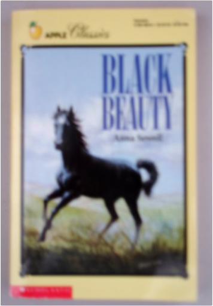

Black BeautyAnna Sewell  Heartbroken when his beloved Squire Gordon is forced to sell him, Black Beauty finds a new life of cruelty and neglect under masters that overwork him, and when his knees are broken in an accident, nobody wants the beautiful thoroughbred. Reprint. |


 Made with Delicious Library
Made with Delicious LibrarySpringfield, State zipflap congrotus delicious library Doddridge, Edward